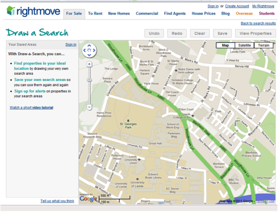
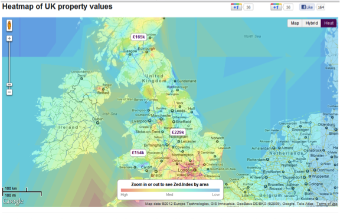

Estate agents are increasingly using web-based technologies to present information about sale and rental properties on their site. Additional information can be added via mapping to make searching for that dream home much more efficient. In the UK we have several service providers that compile information from different agents around the country (e.g. rightmove.co.uk) – this allows a quick search in multiple geographical regions without having to find local agents. However, there are also numerous local agents offering these services with different levels of functionality. A couple of examples can be seen below. Figure 1 allows the user to manually define the geographical area to search for properties in, whereas one of the features from zoopla.co.uk is a heat map of house prices (Figure 2).

Figure 1: rightmove.co.uk "Draw a search"

Figure 2: Heat map of property prices (http://www.zoopla.co.uk/heatmaps/)
For the pass to progress assignment, I want you to select two or three estate agent websites and look at the property maps on their website. You will review the sites and consider the different approaches that are taken to the mapping and use of spatial data. On the basis of this, you will write a brief report using the points below as guidance. The report should be no more than 2-3 pages in length. You can choose from the list below, or you can choose others that you know of. Please include a URL for all websites that you use.
Common UK sites
When writing the report, consider the follow points:
Overall view